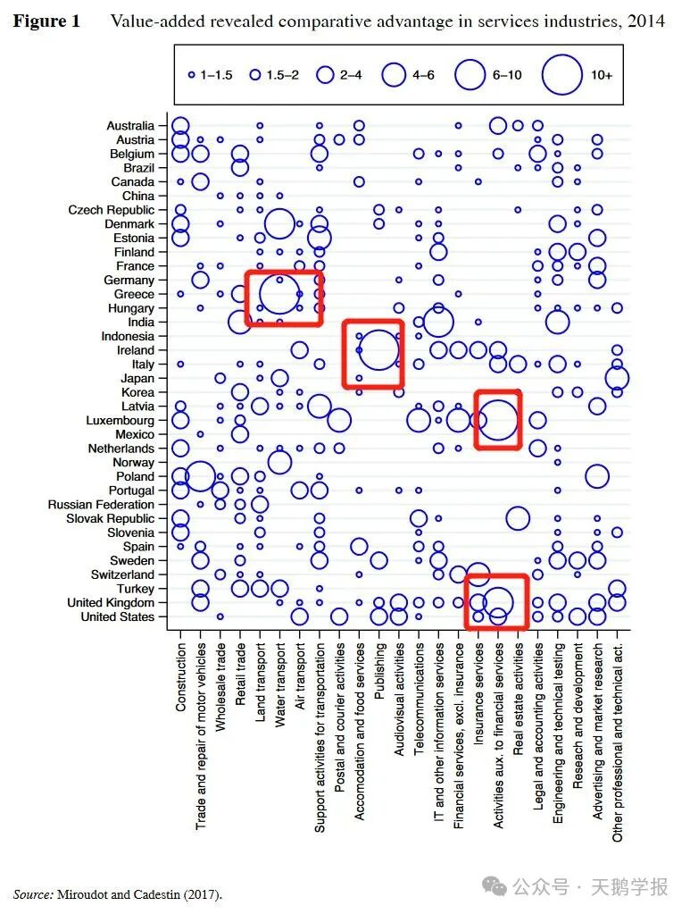

当谈起李嘉图，我们便能想起那个非常优雅简练的框架和假设。他在1817年发表的《政治经济学及赋税原理》中提出了著名的比较优势理论，寥寥几笔，只言片语当中便证明出了国家贸易的方向与贸易所得，生动地呈现了自由贸易给世界给国家带来的益处。
他是坚实的自由贸易的维护者，捍卫者，代言人。过去，他用比较优势理论为废除《谷物法》之路披荆斩棘；如今，随着信息技术的不断发展，世界贸易背景日益复杂，而其中亘古不变的政治经济热点——自由贸易与保护主义仍然在不同国家，国家内部……以不同的身份被提及——小到个人，大到国家，不同的主体在而今全球化的世界里权衡贸易带来的利弊。而李嘉图模型，即使过去了两百多年，它的光芒依旧闪耀着，指引着人们在纷繁复杂的博弈中把握最简单的游戏规则。
一、李嘉图模型的精妙之处
对于一个新接触国际经济学的学生，李嘉图模型是一个很好的入门指南，因为它只是简单地构建了一个以英国的布换葡萄牙的酒的（单要素，两产品，两国家）模型，完美地揭示了自由贸易的效率性，回答了贸易什么以及谁能从贸易中获得福利两个关键问题。也许英国对于葡萄牙来说在制作布和酿酒上有绝对优势，但对于两个国家来说他们都分别只能有单独的比较优势：这对于葡萄牙来说是振奋人心的，即使生产效率相对较低也能出口自己的比较优势产品酒从贸易中获益；对于英国来说，它能通过国际贸易以更为便宜的价格购买葡萄牙的酒，用自己比较优势产品——布换取更多的钱。
图1 李嘉图模型：布与葡萄酒
由以上简单地分析，我们能够概览李嘉图模型中两个国家能从自由贸易中获得的两个好处：（i）能以更便宜的成本获取本国比较劣势的产品（ii）通过贸易获得更多的收入，享受贸易产品的多样性。当然这些所有的框架结果都需要建立在一系列严苛的假设之下才能成立，例如劳动力是唯一的生产要素且不能跨国流动，但我们现实生活当中有很多其他因素会影响产量（例如：禀赋，类似于天然资源等等），禁止劳动力跨国流动似乎不可能实现……因此，在某些程度上，李嘉图模型正如Krugman在《RICARDO'S DIFFICULT IDEA》中阐释的那样——是何其令人“费解”的，当然这里的“费解”来源于很多支持贸易保护主义的政客们或者说相关利益者的刻意使然，他们漠视惘闻忽略那些他们不认为是合理的假设，以片面数据一概而论使得李嘉图模型看起来完全不合理；亦有学者有着“挑战权贵”，渴望批驳旧知以获新知的哗然……
毋庸置疑，存在即合理。我们在这里不具体讨论李嘉图模型的“费解”原因，我们把目光从商品贸易转向服务贸易——如今国际贸易的另一种主要形态，追问李嘉图模型在现代贸易中的衍生意义。
二、从“布和酒”到“运输和金融”
其实在李嘉图的《政治经济学原理与税收》当中，并没有阐释服务或者服务贸易，也没有提及到比较优势与服务贸易之间的交互关系。李嘉图仅仅在引用让·巴蒂斯特·塞的作品时潦草几笔，即所有贸易都是一种服务交换：“在两种产品的交换中，事实上我们只是交换了用来创造它们的生产性服务。”
对于古典经济学家来说，大多数服务都被视为“非生产性的”，他们更多地围绕劳动价值理论对贸易进行研究；在19世纪初，服务贸易规模相对有限，国际贸易集中在商品的生产和交换上，不同于商品贸易，服务贸易同时需要供给方和需求方在同一地点（在当时来说）。这就不难理解为什么李嘉图像当时的大多数经济学家一样，对于贸易的讨论忽略了服务领域。
那么比较优势的理论是否适用于服务领域呢？答案是肯定的。回顾《政治经济学原理与税收》的第七章，如果我们将相对应的商品换为服务，比如说葡萄牙的酒换成水运服务，英国的布换成金融服务。由于生产力的差异（在这里生产力是指提供服务的小时数），对于英国来说，购买葡萄牙的水运服务会比本国提供该服务更经济有效，对葡萄牙来说同理，此时两国都能从服务贸易中获益。需要注意的关键一点，相较于商品贸易，服务贸易生产率的差异更多与各国的技术有关，这恰恰是李嘉图模型的核心假设之一。当然，由于服务贸易本身的特殊性：有些服务必须要求与客户面对面才能完成，但随着信息技术的发展，需要面对面的服务在服务业中的占比已经相较于过去锐减不少。然而，服务贸易依旧无法满足李嘉图模型当中劳动力不可移动这一严苛假设，特别是在数字贸易领域，当涉及网络外部性以及相关的跨境贸易领域时，李嘉图模型再次变得失语无力了。
也许李嘉图模型在解释数字贸易等领域上有一定的局限性，（这便是后来的经济学家站在巨人的肩膀上探究完善的领域）但本身比较优势这一理论并不与现实矛盾，并且很好地揭示了各个国家在服务领域的专业化分工。从实证数据上，我们可以从衡量比较优势的指标“RCA”（“revealed comparative advantage”），通过计算该国某一特定产品出口在总出口中所占比例除以该产品在全球出口中所占比例。值大于1表示该国在该活动中具有比较优势，数值越大，代表该国在该产品的国际竞争力越强值得一提的是，RCA在刻画的各国专业化水平受到很多其他贸易条件的影响变得不那么准确，但依旧有一定的代表性。
图2显示了40个国家在服务行业的增值比较优势（Value-added revealed comparative advantage in services industries），横轴表示不同类型的服务行业，纵轴分别是不同的国家泡泡的大小与比较优势的大小成正比。举几个例子，希腊在水上运输，卢森堡、美国在金融服务，印度在信息技术（IT）和其他信息服务领域都有相对较强的比较优势。由此，我们可以直观地感觉到比较优势理论在解释服务贸易方向上的洞见，即一个国家如果在某一服务领域有较高的生产率，有较低的机会成本，那么该国就会出口该服务；由于专业化分工能带来更多的资金，享受更低的产品成本，各国都能从服务贸易中获得巨大的福利。

图2 世界各国在不同服务上的比较优势
三、服务贸易自由化的艰难之路
今日的服务贸易已然不能与昔日李嘉图时代同日而语。当前，全球已经进入服务经济时代：创造了2/3以上的全球GDP，吸收了全球2/3以上的外商直接投资，在发展中国家提供了将近2/3的就业机会，在发达国家更是提供了4/5的就业岗位。在疫情时代，随着数字技术广泛应用，服务贸易数字化的进程进一步加快，成为世界贸易经济增长的一大关键因素……我们看到当今世界服务贸易的巨大体量，预见实现专业化分工带来潜在的巨大收益，便很难理解为什么目前各国并没有完全在服务贸易领域实现较为开放的自由分工，甚至高筑贸易壁垒。根据WTO研究报告显示，目前国际服务贸易的成本大约是跨境货物贸易成本的2倍，更是国内服务交易成本的4倍。
一个答案是服务本身的特殊性，这一特殊性一方面体现在人身上，另外一方面体现在行业部门身上。像我们在这之前介绍的一样，服务贸易与商品贸易存在很大差异，因为服务通常与特定的地理位置和人员密切相关，因此文化、不平等、价值、制度等因素对服务贸易的影响远比人类劳动价值外化的商品要深远复杂，削减服务贸易的壁垒，包括减少对外商投资的限制、取消经营许可证要求、放开工作签证以及修改专业服务标准等，远比降低关税要困难得多；一个经典的例子：高等教育当中的跨境服务贸易，比如外国留学生在其他国家接受教育，此时的服务贸易环节远远比单纯在购物平台上网购海外产品要更为复杂，最直接显现的是不同国家的文化差异，语言障碍，出国签证等等隐形或显性壁垒。
图3 跨境留学过程中可能会遇到的隐形或显性壁垒
另外，服务部门通常有市场外部性（例如：数字贸易中很强的网络外部效应），由此可能带来的不完全竞争——垄断，操纵等等难以受到监管与统一有效公平的处理。在一些领域，监管机构认为跨境商业更多地被视为潜在的混乱源而不是经济收益（例如金融服务）。然而，往往很难将贸易保护与真正的监管担忧区分开。像航空运输这样的行业仍然被组织成某种卡特尔形式，并且仍然被排除在多边和区域贸易自由化努力之外。
但我们必须看到，服务贸易的开放确实可以大大提高整个国民经济的生产率和服务业及制造业的对外竞争力。一项对57个国家的抽样研究发现，服务贸易的自由化可以将制造业生产率平均提高22%。更加开放的服务贸易不仅可以促进发展中国家工业制成品的出口，而且也有助于实现出口产品的多元化。
图4 当今的服务贸易
在技术逐渐模糊了商品与服务之间界限的今天，李嘉图的观点掷地有声，为服务贸易自由化提供了有力框架。我们需要在有序的监管与制度规范下，呼唤更多在服务贸易开放的声音，降低服务贸易壁垒，发挥各国专业服务、技术服务、金融服务、电子计算机和信息服务以及知识产权服务等领域的比较优势，提升各国福利。